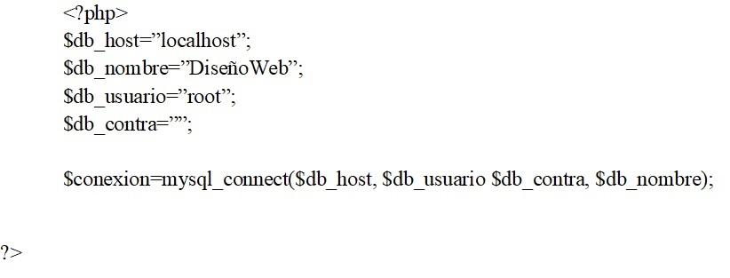

Es importante tener en cuenta que las conexiones a base de datos se pueden realizar a remoto o local. De hay la importancia que cada caso tiene diferente configuración por lo que se debe tener en cuenta al momento de realizar la petición de conexión o de lo contrario se tendría errores.
Para realizar la conexión con la BBDD se debe de tener en cuenta los siguientes datos: -Direccion. -Nombre. -Usuario. -Contraseña.
Como ejemplo para realizar la conexión en localhost es:
